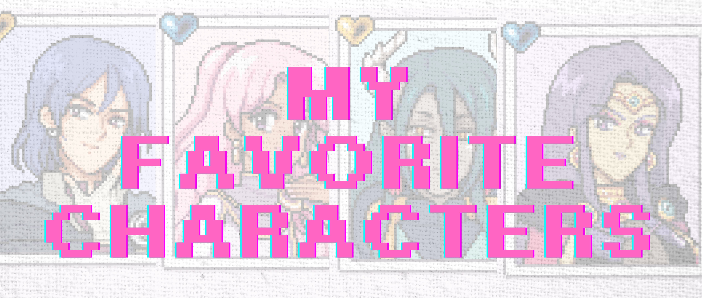

While every villager in Mistria has their own charm, these are the characters that stood out to me the most. Here’s a closer look at who they are, how they contribute to the game, and why they’ve become my personal favorites.
Jupiter 🔮
Who Is Jupiter?
Juniper is a reserved, stylish sorceress who moved to Mistria after the quake, intrigued by the magical mists and monsters cropping up nearby. She runs the bathhouse with her dog, Dozy, and often uses those hot springs (and you!) to test experimental potions—usually helpful buffs, sometimes comical mishaps. You’ll find her in the bathhouse or wandering for ingredients; romance events and gift preferences reinforce her indulgent tastes, such as wine, and curiosity, like bringing her treasures from within the caves that she might like.
What I Like About Her Character:
I think Juniper is such a standout because of her style, her sharp attitude, and of course the fact that she’s actually a witch. At first, she can come across as mean or even a little rude, both toward the player and some of the other villagers. But as you spend more time with her—and get to know her loyal dog, Dozy—you realize that her brashness masks a lot of personality and depth. She’s witty, confident, and sometimes blunt, but those edges are part of what make her memorable. Over time, Juniper reveals herself as more than just the aloof sorceress in town; she becomes a character whose strong presence and hidden warmth make every interaction interesting.
Caldarus🐉
Who Is Caldarus?
Caldarus is the ancient dragon guardian tied to Mistria’s statue—your bond begins after you repair it, and he reaches out via dreams and requests. In updates this year, he can assume a human form and is romanceable after a mine-linked quest chain; in person he’s thoughtful, fond of food and conversation, but prefers the Deep Woods and tires when far from his domain. You’ll interact with him at his temple/home and through story quests that expand as the Early Access version of the game evolves.
What I Like About His Character:
I think Caldarus is such a sweet character. From the very beginning, even before you realize it, he’s there—trapped within a statue yet quietly watching over you and offering greetings when you click on his statue. Once you unlock him, you see just how much he’s been a silent presence in the background, looking out for you all along as you played through the game. I love the little details, like the times you catch him playing his instrument, or how he constantly asks about the villagers he wishes he could meet face to face but can't—well, since he is half-dragon. There’s a tenderness in that longing that makes him feel both otherworldly and deeply human, and it’s what makes Caldarus one of the more endearing characters in Mistria.
Adeline 👑
4.jpeg)
Who is Adeline?
Adeline is Mistria’s overworked town leader (and a romance candidate). She’s the Baron and Baroness’s daughter and Eiland’s sister, effectively running day-to-day civic work after the earthquake and spearheading restorations through official requests to the player. Her personality skews diligent and a bit of a workaholic, but townsfolk nudge her to take breaks; you’ll often catch her in the manor office, at the inn, or heading to the bathhouse with friends.
What I Like About Her Character:
I think Adeline is such a sweet character. From the very start, she shows how dedicated she is to the town’s recovery after the earthquakes—working tirelessly to manage food rations and plan for the future of Mistria. That sense of responsibility often leaves her overworked, but it’s clear her heart is always in the right place. As your friendship, or even romance, develops with her, you begin to see the depth of her loyalty and the genuine admiration she has for the people of the town. She values your support in helping her rebuild and guide Mistria, and in return, you get to see a side of her that balances strength with vulnerability. It’s that mix of determination and warmth that makes her another more endearing villager to me.
Balor ğŸ’
Who is Balor?
Balor is a traveling merchant (also romanceable) who stays at the Sleeping Dragon Inn and sells wares at the Saturday market or just outside town. He’s the one who picks up your shipping bin and leaves payment overnight. Public lore paints him as charming, a touch secretive, and laser-focused on profit—“a rogue-turned-merchant with a mysterious past”—which ties into quests you’ll eventually do with him. Expect to find him around the inn, the market, or near his wagon.
What I Like About His Character:
I think Balor is a fascinating character. At first, he can seem overly focused on money and the pursuit of rare treasures or gems, which comes out in the gifts he prefers and in conversations around town. But beneath that mercantile surface, there’s more to him than profit. Balor has a depth that makes him both caring and loveable once you take the time to get closer. At the same time, he’s a little impulsive, especially when it comes to dealing with shady people outside the village, and those choices can sometimes create tension as you build a friendship or even a romance with him. That mix of charm, ambition, and flaw makes him feel very real — and it’s what makes him such a compelling presence in Mistria.
Adeline, Balor, Juniper, and Caldarus may be my favorites, but every villager in Mistria has a story waiting to be discovered. That’s what makes this world so special — the way it grows with every connection you make.